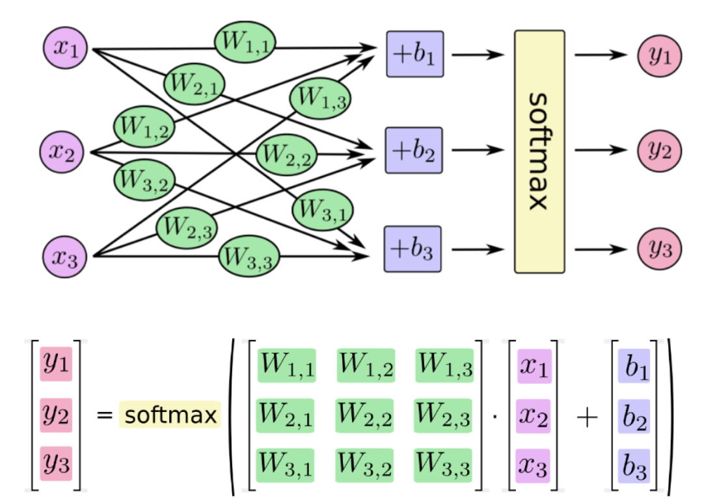

使用Pytorch实现手写数字识别
目标
- 知道如何使用Pytorch完成神经网络的构建
- 知道Pytorch中激活函数的使用方法
- 知道Pytorch中
torchvision.transforms中常见图形处理函数的使用 - 知道如何训练模型和如何评估模型
1. 思路和流程分析
流程：
- 准备数据，这些需要准备DataLoader
- 构建模型，这里可以使用torch构造一个深层的神经网络
- 模型的训练
- 模型的保存，保存模型，后续持续使用
- 模型的评估，使用测试集，观察模型的好坏
2. 准备训练集和测试集
准备数据集的方法前面已经讲过，但是通过前面的内容可知，调用MNIST返回的结果中图形数据是一个Image对象,需要对其进行处理
为了进行数据的处理，接下来学习torchvision.transfroms的方法
2.1 torchvision.transforms的图形数据处理方法
2.1.1 torchvision.transforms.ToTensor
把一个取值范围是[0,255]的PIL.Image或者shape为(H,W,C)的numpy.ndarray，转换成形状为[C,H,W]
其中(H,W,C)意思为(高，宽，通道数)，黑白图片的通道数只有1，其中每个像素点的取值为[0,255],彩色图片的通道数为(R,G,B),每个通道的每个像素点的取值为[0,255]，三个通道的颜色相互叠加，形成了各种颜色
示例如下：
from torchvision import transforms
import numpy as np
data = np.random.randint(0, 255, size=12)
img = data.reshape(2,2,3)
print(img.shape)
img_tensor = transforms.ToTensor()(img) # 转换成tensor
print(img_tensor)
print(img_tensor.shape)
输出如下：
shape:(2, 2, 3)
img_tensor:tensor([[[215, 171],
[ 34, 12]],
[[229, 87],
[ 15, 237]],
[[ 10, 55],
[ 72, 204]]], dtype=torch.int32)
new shape:torch.Size([3, 2, 2])
注意：
transforms.ToTensor对象中有__call__方法，所以可以对其示例能够传入数据获取结果
2.1.2 torchvision.transforms.Normalize(mean, std)
给定均值：mean，shape和图片的通道数相同(指的是每个通道的均值)，方差：std，和图片的通道数相同(指的是每个通道的方差)，将会把Tensor规范化处理。
即：Normalized_image=(image-mean)/std。
例如：
from torchvision import transforms
import numpy as np
import torchvision
data = np.random.randint(0, 255, size=12)
img = data.reshape(2,2,3)
img = transforms.ToTensor()(img) # 转换成tensor
print(img)
print("*"*100)
norm_img = transforms.Normalize((10,10,10), (1,1,1))(img) #进行规范化处理
print(norm_img)
输出如下：
tensor([[[177, 223],
[ 71, 182]],
[[153, 120],
[173, 33]],
[[162, 233],
[194, 73]]], dtype=torch.int32)
***************************************************************************************
tensor([[[167, 213],
[ 61, 172]],
[[143, 110],
[163, 23]],
[[152, 223],
[184, 63]]], dtype=torch.int32)
注意：在sklearn中，默认上式中的std和mean为数据每列的std和mean，sklearn会在标准化之前算出每一列的std和mean。
但是在api：Normalize中并没有帮我们计算，所以我们需要手动计算
当mean为全部数据的均值，std为全部数据的std的时候，才是进行了标准化。
如果mean(x)不是全部数据的mean的时候，std(y)也不是的时候，Normalize后的数据分布满足下面的关系 $$ \begin{align} &new_mean = \frac{mean-x}{y}&， mean为原数据的均值，x为传入的均值x \ &new_std = \frac{std}{y} &，y为传入的标准差y\ \end{align} $$
2.1.3 torchvision.transforms.Compose(transforms)
将多个transform组合起来使用。
例如
transforms.Compose([
torchvision.transforms.ToTensor(), #先转化为Tensor
torchvision.transforms.Normalize(mean,std) #在进行正则化
])
2.2 准备MNIST数据集的Dataset和DataLoader
准备训练集
import torchvision
#准备数据集，其中0.1307，0.3081为MNIST数据的均值和标准差，这样操作能够对其进行标准化
#因为MNIST只有一个通道（黑白图片）,所以元组中只有一个值
dataset = torchvision.datasets.MNIST('/data', train=True, download=True,
transform=torchvision.transforms.Compose([
torchvision.transforms.ToTensor(),
torchvision.transforms.Normalize(
(0.1307,), (0.3081,))
]))
#准备数据迭代器
train_dataloader = torch.utils.data.DataLoader(dataset,batch_size=64,shuffle=True)
准备测试集
import torchvision
#准备数据集，其中0.1307，0.3081为MNIST数据的均值和标准差，这样操作能够对其进行标准化
#因为MNIST只有一个通道（黑白图片）,所以元组中只有一个值
dataset = torchvision.datasets.MNIST('/data', train=False, download=True,
transform=torchvision.transforms.Compose([
torchvision.transforms.ToTensor(),
torchvision.transforms.Normalize(
(0.1307,), (0.3081,))
]))
#准备数据迭代器
train_dataloader = torch.utils.data.DataLoader(dataset,batch_size=64,shuffle=True)
3. 构建模型
补充：全连接层：当前一层的神经元和前一层的神经元相互链接，其核心操作就是$y = wx$，即矩阵的乘法，实现对前一层的数据的变换
模型的构建使用了一个三层的神经网络，其中包括两个全连接层和一个输出层，第一个全连接层会经过激活函数的处理，将处理后的结果交给下一个全连接层，进行变换后输出结果
那么在这个模型中有两个地方需要注意：
- 激活函数如何使用
- 每一层数据的形状
- 模型的损失函数
3.1 激活函数的使用
前面介绍了激活函数的作用，常用的激活函数为Relu激活函数，他的使用非常简单
Relu激活函数由import torch.nn.functional as F提供，F.relu(x)即可对x进行处理
例如：
In [30]: b
Out[30]: tensor([-2, -1, 0, 1, 2])
In [31]: import torch.nn.functional as F
In [32]: F.relu(b)
Out[32]: tensor([0, 0, 0, 1, 2])
3.2 模型中数据的形状（【添加形状变化图形】）
- 原始输入数据为的形状:
[batch_size,1,28,28] - 进行形状的修改：
[batch_size,28*28],(全连接层是在进行矩阵的乘法操作) - 第一个全连接层的输出形状：
[batch_size,28]，这里的28是个人设定的，你也可以设置为别的 - 激活函数不会修改数据的形状
- 第二个全连接层的输出形状：
[batch_size,10],因为手写数字有10个类别
构建模型的代码如下：
import torch
from torch import nn
import torch.nn.functional as F
class MnistNet(nn.Module):
def __init__(self):
super(MnistNet,self).__init__()
self.fc1 = nn.Linear(28*28*1,28) #定义Linear的输入和输出的形状
self.fc2 = nn.Linear(28,10) #定义Linear的输入和输出的形状
def forward(self,x):
x = x.view(-1,28*28*1) #对数据形状变形，-1表示该位置根据后面的形状自动调整
x = self.fc1(x) #[batch_size,28]
x = F.relu(x) #[batch_size,28]
x = self.fc2(x) #[batch_size,10]
可以发现：pytorch在构建模型的时候形状上并不会考虑batch_size
3.3 模型的损失函数
首先，我们需要明确，当前我们手写字体识别的问题是一个多分类的问题，所谓多分类对比的是之前学习的2分类
回顾之前的课程，我们在逻辑回归中，我们使用sigmoid进行计算对数似然损失，来定义我们的2分类的损失。
在2分类中我们有正类和负类，正类的概率为$P(x) = \frac{1}{1+e^{-x}} = \frac{e^x}{1+e^x}$,那么负类的概率为$1-P(x)$
将这个结果进行计算对数似然损失$-\sum y log(P(x))$就可以得到最终的损失
那么在多分类的过程中我们应该怎么做呢？
多分类和2分类中唯一的区别是我们不能够再使用sigmoid函数来计算当前样本属于某个类别的概率，而应该使用softmax函数。
softmax和sigmoid的区别在于我们需要去计算样本属于每个类别的概率，需要计算多次，而sigmoid只需要计算一次
softmax的公式如下：
$$ \sigma(z)j = \frac{e^{z_j}}{\sum^K{k=1}e^{z_K}} ,j=1 \cdots k
$$
例如下图：

假如softmax之前的输出结果是2.3, 4.1, 5.6,那么经过softmax之后的结果是多少呢？
$$ Y1 = \frac{e^{2.3}}{e^{2.3}+e^{4.1}+e^{5.6}} \ Y2 = \frac{e^{4.1}}{e^{2.3}+e^{4.1}+e^{5.6}} \ Y3 = \frac{e^{5.6}}{e^{2.3}+e^{4.1}+e^{5.6}} \
$$
对于这个softmax输出的结果，是在[0,1]区间，我们可以把它当做概率
和前面2分类的损失一样，多分类的损失只需要再把这个结果进行对数似然损失的计算即可
即：
$$ \begin{align} & J = -\sum Y log(P) &, 其中 P = \frac{e^{zj}}{\sum^K{k=1}e^{z_K}} ,Y表示真实值 \end{align}
$$ 最后，会计算每个样本的损失，即上式的平均值
我们把softmax概率传入对数似然损失得到的损失函数称为交叉熵损失
在pytorch中有两种方法实现交叉熵损失
criterion = nn.CrossEntropyLoss() loss = criterion(input,target)#1. 对输出值计算softmax和取对数 output = F.log_softmax(x,dim=-1) #2. 使用torch中带权损失 loss = F.nll_loss(output,target)
带权损失定义为：$ln = -\sum w{i} x_{i}$，其实就是把$log(P)$作为$x_i$,把真实值Y作为权重
4. 模型的训练
训练的流程：
- 实例化模型，设置模型为训练模式
- 实例化优化器类，实例化损失函数
- 获取，遍历dataloader
- 梯度置为0
- 进行向前计算
- 计算损失
- 反向传播
- 更新参数
mnist_net = MnistNet()
optimizer = optim.Adam(mnist_net.parameters(),lr= 0.001)
def train(epoch):
mode = True
mnist_net.train(mode=mode) #模型设置为训练模型
train_dataloader = get_dataloader(train=mode) #获取训练数据集
for idx,(data,target) in enumerate(train_dataloader):
optimizer.zero_grad() #梯度置为0
output = mnist_net(data) #进行向前计算
loss = F.nll_loss(output,target) #带权损失
loss.backward() #进行反向传播，计算梯度
optimizer.step() #参数更新
if idx % 10 == 0:
print('Train Epoch: {} [{}/{} ({:.0f}%)]\tLoss: {:.6f}'.format(
epoch, idx * len(data), len(train_dataloader.dataset),
100. * idx / len(train_dataloader), loss.item()))
5. 模型的保存和加载
5.1 模型的保存
torch.save(mnist_net.state_dict(),"model/mnist_net.pt") #保存模型参数
torch.save(optimizer.state_dict(), 'results/mnist_optimizer.pt') #保存优化器参数
5.2 模型的加载
mnist_net.load_state_dict(torch.load("model/mnist_net.pt"))
optimizer.load_state_dict(torch.load("results/mnist_optimizer.pt"))
6. 模型的评估
评估的过程和训练的过程相似，但是：
- 不需要计算梯度
- 需要收集损失和准确率，用来计算平均损失和平均准确率
- 损失的计算和训练时候损失的计算方法相同
- 准确率的计算：
- 模型的输出为[batch_size,10]的形状
- 其中最大值的位置就是其预测的目标值（预测值进行过sotfmax后为概率，sotfmax中分母都是相同的，分子越大，概率越大）
- 最大值的位置获取的方法可以使用
torch.max,返回最大值和最大值的位置 - 返回最大值的位置后，和真实值（
[batch_size]）进行对比，相同表示预测成功
def test():
test_loss = 0
correct = 0
mnist_net.eval() #设置模型为评估模式
test_dataloader = get_dataloader(train=False) #获取评估数据集
with torch.no_grad(): #不计算其梯度
for data, target in test_dataloader:
output = mnist_net(data)
test_loss += F.nll_loss(output, target, reduction='sum').item()
pred = output.data.max(1, keepdim=True)[1] #获取最大值的位置,[batch_size,1]
correct += pred.eq(target.data.view_as(pred)).sum() #预测准备样本数累加
test_loss /= len(test_dataloader.dataset) #计算平均损失
print('\nTest set: Avg. loss: {:.4f}, Accuracy: {}/{} ({:.2f}%)\n'.format(
test_loss, correct, len(test_dataloader.dataset),
100. * correct / len(test_dataloader.dataset)))
7. 完整的代码如下：
import torch
from torch import nn
from torch import optim
import torch.nn.functional as F
import torchvision
train_batch_size = 64
test_batch_size = 1000
img_size = 28
def get_dataloader(train=True):
assert isinstance(train,bool),"train 必须是bool类型"
#准备数据集，其中0.1307，0.3081为MNIST数据的均值和标准差，这样操作能够对其进行标准化
#因为MNIST只有一个通道（黑白图片）,所以元组中只有一个值
dataset = torchvision.datasets.MNIST('/data', train=train, download=True,
transform=torchvision.transforms.Compose([
torchvision.transforms.ToTensor(),
torchvision.transforms.Normalize((0.1307,), (0.3081,)),]))
#准备数据迭代器
batch_size = train_batch_size if train else test_batch_size
dataloader = torch.utils.data.DataLoader(dataset,batch_size=batch_size,shuffle=True)
return dataloader
class MnistNet(nn.Module):
def __init__(self):
super(MnistNet,self).__init__()
self.fc1 = nn.Linear(28*28*1,28)
self.fc2 = nn.Linear(28,10)
def forward(self,x):
x = x.view(-1,28*28*1)
x = self.fc1(x) #[batch_size,28]
x = F.relu(x) #[batch_size,28]
x = self.fc2(x) #[batch_size,10]
# return x
return F.log_softmax(x,dim=-1)
mnist_net = MnistNet()
optimizer = optim.Adam(mnist_net.parameters(),lr= 0.001)
# criterion = nn.NLLLoss()
# criterion = nn.CrossEntropyLoss()
train_loss_list = []
train_count_list = []
def train(epoch):
mode = True
mnist_net.train(mode=mode)
train_dataloader = get_dataloader(train=mode)
print(len(train_dataloader.dataset))
print(len(train_dataloader))
for idx,(data,target) in enumerate(train_dataloader):
optimizer.zero_grad()
output = mnist_net(data)
loss = F.nll_loss(output,target) #对数似然损失
loss.backward()
optimizer.step()
if idx % 10 == 0:
print('Train Epoch: {} [{}/{} ({:.0f}%)]\tLoss: {:.6f}'.format(
epoch, idx * len(data), len(train_dataloader.dataset),
100. * idx / len(train_dataloader), loss.item()))
train_loss_list.append(loss.item())
train_count_list.append(idx*train_batch_size+(epoch-1)*len(train_dataloader))
torch.save(mnist_net.state_dict(),"model/mnist_net.pkl")
torch.save(optimizer.state_dict(), 'results/mnist_optimizer.pkl')
def test():
test_loss = 0
correct = 0
mnist_net.eval()
test_dataloader = get_dataloader(train=False)
with torch.no_grad():
for data, target in test_dataloader:
output = mnist_net(data)
test_loss += F.nll_loss(output, target, reduction='sum').item()
pred = output.data.max(1, keepdim=True)[1] #获取最大值的位置,[batch_size,1]
correct += pred.eq(target.data.view_as(pred)).sum()
test_loss /= len(test_dataloader.dataset)
print('\nTest set: Avg. loss: {:.4f}, Accuracy: {}/{} ({:.2f}%)\n'.format(
test_loss, correct, len(test_dataloader.dataset),
100. * correct / len(test_dataloader.dataset)))
if __name__ == '__main__':
test()
for i in range(5): #模型训练5轮
train(i)
test()